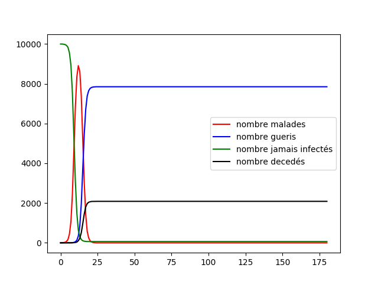
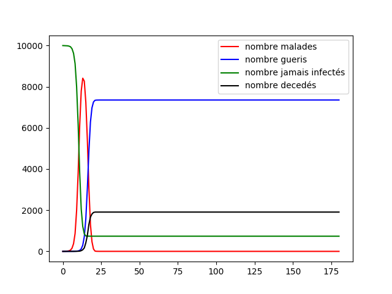

Graphe - Devoir Maison propagation du Covid-19
Decou Nathan , Delpeuch Sébastien, Moinel Aurélien, Pringalle Antoine
Le but de ce devoir maison est d’utiliser l’algorithmique des graphes pour modéliser une version simpliste de la propagation du Covid-19. Le devoir se décompose en 3 parties d’implémentation, tout d’abord nous mettons en place les paramètres (mortalité, durée de maladie) et les différents graphes. Vient ensuite le rajout de paramètres simples comme des tests sur la population etc. Finalement nous avons tenté de rajouter des facteurs plus réalistes et nous nous sommes un peu écartés du sujet pour proposer des compléments sur la propagation d’une épidémie et pour manipuler les notions de l’algorithmique des graphes.
Avant de commencer nous mettons à votre disposition, la documentation de notre code et l’archive contenant nos codes. La date de la dernière modification du site est présente en début de page pour vous assurer que nous n’avons pas dépassé la date limite.
Partie I - Implémentation d’une base (Nathan & Aurélien)
La première partie permet de définir les bases de la modélisation c’est à dire les différents états, les différents paramètres, les règles de changement d’état, les topologies de graphes étudiés et les différents modèles de ces derniers. Nous reprennons précisément les définitions du sujet.
Graphe circulaire
Dans un premier temps nous allons définir la séquence de graphe permettant de réprésenter l’état du graphe au jour . Peu importe le jour, les sommets du graphe ne changent pas. Ainsi dans une première partie d’initialisation nous construisons le graphe en fonction de la topologie choisie, dans tous les cas le graphe possède sommets. Ensuite vient la construction des arêtes du graphe. Pour le graphe circulaire, cela est effectué dans l’initialisation, en effet les individus ne sont reliés qu’à leurs voisins de droite et de gauche, cela est indépendant du jour. Par construction ce graphe est connexe.
De plus chaque jour, nous devons appliquer les règles de changement d’état à tous les individus, ainsi peut importe la topologie du graphe nous parcourons le graphe, si nous tombons sur une personne malade nous appliquons à tous ses voisins une probabilité de tomber malade, si l’un tombe malade nous initialisons un compteur représentant la durée de sa maladie. Si nous tombons sur une personne malade depuis une durée nous appliquons la probabilité de décéder. A noter que si une personne décède la liste de ses voisins est vidée.
Une fois cela présenté, nous pouvons réaliser une base de l’implémentation. Nous
définissons donc une classe python individu. Cela nous permet de renseigner
les informations importantes sur chaque individu, son état, son identificateur,
le nombre de jour depuis lequel il est malade s’il est malade. Finalement dans
cette version un individu possède aussi un tableau avec l’identificateur de ses
actuels voisins.
Résumons la construction de ce modèle. Tout d’abord nous créons une population
de taille . Cela se fait en initialisant individus et donc en temps
linéaire en fonction de . Ensuite nous créons le graphe circulaire, nous
utilisons une matrice d’adjacence, nous parcourons tous les individus et à
chaque fois nous mettons un 1 dans la case et . Dans le
même temps nous remplissons le tableau des voisins de chaque individu. La
création de ce graphe est donc réalisé en O(n) où est
le nombre d’individu. Nous devons ensuite appliquer le modèle en fonction
de ou , cette fonction à une complexité O(n*k') en effet il faut
pour chaque individu lui faire choisir contact parmis ses
fréquentation. Dans le graphe circulaire vaut toujours 2, ainsi
peut valoir 2 et donc cela ne change rien ou 1. A ce stade nous avons initialisé
correctement le graphe, la complexité de l’initialisation est majorée par
O(n*m) où est le nombre moyen de voisins.
Passons maintenant au détail de la propagation jour par jour. Chaque jour nous
devons parcourir tous les individus. Si nous sommes dans un modèle dynamique nous
devons actualiser les voisins. Ensuite si l’individu est malade depuis
jours, lui appliquer une chance de mourir, si l’individu est en contact avec des
malades lui appliquer une chance de devenir malade. Finalement nous ajoutons un jour
de maladie à tous les malades. Ainsi pour calculer l’état du graphe au jour
nous avons une fonction de complexité è O(n+m) où est le nombre
moyen de voisin d’un individu.
Nous pouvons à partir de cela établir notre code final pour le graphe circulaire en modèle
statique et dynamique. Nous initialisons dans un premiers temps le graphe et la
population. Nous faisons ensuite appel à la fonction de propagation jour par
jour le nombre de jours que nous voulons (par défaut 180), nous avons ajouté
certainnes fonctionnalités nous permettant de récupèrer chaque jour une image du
graphe et le nombre de malade, sain, remis ou décédés. In fine notre
algortihme principal à une complexité de O(nbr jours * n * m).
Nous pouvons commencer, comme le sujet nous y invite, à simuler la propagation dans une graphe circulaire, tout d’abord dans le modèle statique et dynamique avec des populations de 50 et 10000 individus en prenant comme paramètres dans cette topologie la variation de influe peu sur les résultats nous prenons . Voici quelques animations permettant de visualiser la propagation dans les différents graphes au fur et à mesure des jours.


Nous pouvons tout d’abord observer la propagation de la maladie sur le graphe circulaire, cela est conforme à nos attentes, la maladie se propage de voisin en voisin et au bout de 14 jours chaque malade devient soit guéri soit mort. Etant donné que nous avons une chance de de mourir nous avons aucun mort car nous avons une population restreinte uniquement de 50 individus.
Nous avons en parallèle tracé l’évolution des quatre groupes (malades, guéris, jamais infectés, décédés) sur une population de 10 000 individus, nous voyons qu’à cause de la faible propagation du virus la maladie ne s’est pas diffusé dans la population. Cependant il apparaît clairement que les résultats sont peu satisfaisants, en effet le graphe circulaire est relativement simpliste et ne représente que très peu les connexions humaines. Nous devons alors parfaire notre modèle.
Graphe Aléatoire
Nous nous tournons donc vers la deuxième topologie proposée, le graphe aléatoire. Celui-ci relie les sommets de manière aléatoire (il est à noter qu’il n’est pas forcément connexe). Pour gérer plus facilement le modèle statique et dynamique nous remplissons dans l’initialisation le tableau des voisins par voisins choisis de manière aléatoire, si nous sommes dans un modèle statique nous sélectionnons aléatoirement pour chaque individu dans l’initialisation voisins parmi ses voisins. En revanche si nous sommes dans un modèle dynamique, à chaque jour nous devons sélectionner aléatoirement voisins parmis ses contacts autorisés. Grâce à notre implémentation basée sur un tableau contenant les contacts possibles et un tableau contenant ses voisins pour le jour la complexité de l’initialisation et de la boucle principale reste inchangée.


Nous pouvons alors réaliser des tests en prenant les mêmes paramètres que précédemment avec une population de 100 et en fixant et 10 000 individus en faisant varier de à . Nous utilisons à chaque fois le modèle statique et dynamique.
Commençons par regarder les propagations, tout d’abord sur le statique, nous pouvons voir que nous avons un modèle plus réaliste, la maladie se propage au cours du temps dans la population de manière plus ou moins aléatoire, certains meurent mais la majorité de la population reste saine (cela est dû à la faible mortalité), de plus nous pouvons voir que la majorité de la population est infectée durant les 180 jours. Si l’on regarde le graphe dynamique nous avons visuellement une confirmation que chaque jour les connexions changent, la maladie se propage alors très vite mais peu de personnes meurent, cela est dû à la population réduite que nous avons. Nous allons donc regarder ce qu’il se passe sur des populations de 1 000 individus et en faisant varier entre 1 et 50 cela nous permet de voir l’influence de la fréquentation de chacun et de mettre en lumière l’effet de la distanciation sociale.


Nous voyons tout d’abord quelque chose, plus augmente plus le pic épidémique est élevé et tôt, cela nous montre que les contacts favorisent la propagation de la maladie, lorsque est très élevé, la propagation de la maladie à toute la population ne prend que quelques jours. Cela est encore plus visible sur le modèle dynamique, lorsque est supérieur à 5, la maladie prend moins de 3 jours à infecter toute la population.
Ce graphe est déjà plus réaliste et nous montre qu’une maladie non contrôlée peut se propager rapidement, dans notre cas la mortalité est peu élevée, si nous avions une maladie plus létale elle aurait décimé rapidement toute la population. Sur une population de 10 000 individus et pour nous obtenons le graphe suivant qui nous montre un pic épidémique très élevé (toute la population) et très tôt (15 ième jour)

Les résultats sont plus satisfaisants en effet nous pouvons voir une rapide propagation de l’épidémie dans la population, rappelons que l’idée de cette partie est de réussir à mettre en place un graphe représentant une population ainsi que des connexions entre les individus de manière se rapprochant le plus de la réalité possible. Faisons un point sur les deux graphes présentés. Nous avons d’une part un graphe circulaire, représentant des individus connectés uniquement avec leurs voisins. D’autre part nous avons un graphe aléatoire qui simule des connexions totalement aléatoires avec les autres personnes. Nous allons présenter une dernière topologie.
Graphe mixte
Nous allons donc maintenant utiliser un graphe mixte, union des deux qui nous permet de simuler une population qui est en contact avec ses voisins et un nombre aléatoire d’individus. Ce graphe est le graphe le plus représentatif d’une population humaine, après cette partie nous n’utiliserons que ce dernier.
La boucle principale n’a que très peu de modifications, dans l’initialisation nous établissons un graphe à sommets, les arêtes de ce dernier sont défini telles que pour un individu il soit voisin de et et au maximum voisins choisis aléatoirement parmi les voisins (eux aussi choisis aléatoirement) qu’il a le droit de voir. Grâce à notre implémentation des individus, nous pouvons réussir cette initialisation en un temps où est le nombre moyen de voisins.
Ensuite si nous regardons la propagation jour par jour, cette dernière ne change pas des autres implémentations, si le modèle est statique les arêtes sont définies dans l’initialisation et nous appliquons les règles de changements d’états jour par jour. Si le modèle est dynamique, chaque jour nous modifions les arêtes tel que chaque individu soit connecté à ses deux voisins et qu’il soit connecté à au plus voisins choisis parmi ses voisins possibles. La boucle de simulation est donc en complexité .


Nous pouvons alors réaliser des tests en prenant et les mêmes paramètres que précédemment.
Les résultats du graphe mixte sont très similaires aux résultats du graphe aléatoire, cependant nous notons en plus une propagation voisin par voisin, la maladie se propage toujours à une vitesse incroyable. Et toute la population est touchée.
Nous avons donc défini une topologie de graphe et des modèles de graphe nous permettant de simuler la propagation d’une maladie dans un population ayant des interractions ressemblant à des relations humaines. Nous avons actuellement une modélisation d’une propagation naturelle d’une maladie, cette maladie se propage rapidement et toute la population est rapidement touchée. Nous avons dans nos modèles peu de morts mais si nous avions 67 000 000 d’individus cela représente tout de même 670 000 personnes (70 millions de morts sur l’ensemble de la planète sans aucune mesure pour contenir et ralentir la maladie).
Partie II - Rajout de tests simples (Sébastien & Antoine)
Nous allons maintenant implémenter des stratégies de réponse à l’épidémie que vont adopter les individus. Cela se traduit par exemple par la mise en confinement de la population ou le test massif de la population. Le but ici est d’étudier l’efficacité des mesures de lutte contre l’épidémie. Nous serons donc particulièrement attentifs à la taille du pic épidémique et le nombre de morts total.
Remarquons que la première partie fera office d’exemple du déroulement “normal” de l’épidémie sans tests ni confinement obligatoire.
Cette partie va parler de tests sur la population. Cependant les tests pendant une épidémie ne sont pas magiques, en effet les tests ne détectent pas avec 100% de chance un individu malade et dans le même temps ils peuvent détecter un individu positif alors qu’il n’est pas malade (faux positif). L’évocation de tests dans ce rapport ne peut aller sans l’évocation du paradoxe de Simpson. Ce dernier stipule que lors d’un test statistique dans certaines conditions les résultats du tests s’inversent et nous induisent donc en erreur.
 Lorsque nous effectuons un test lors d’une épidémie le paradoxe de
Simpson est très facile à montrer. Prenons les conditions du sujet, la maladie
touche de la population, si un individu est malade, le test est positif
avec de chance. Finalement nous devons ajouter la probabilité de faux
positifs, à l’heure actuelle plusieurs
sources
nous indiquent qu’avec les tests actuels une personne non malade est détectée
positive avec de chance. L’arbre ci-contre résume la situation où
indique que l’individu est malade et indique que le test est positif. Si
nous prenons un échantillon de 10 000 individus, nous aurons alors 70 individus
malades et testés positifs, 30 malades et testés négatifs, 990 non malades testés
positifs et 8910 non malades. Le paradoxe de Simpson est mis en lumière, le
nombre de malade selon le test est supérieur au nombre de malade réel, il y a
même plus de gens non malades qui sont testé positifs que de malades qui sont
testés positifs. L’utilisation des tests est donc délicat, ainsi nous
allons confiner une partie de la population qui en réalité n’est pas malade
(dans notre cas de la population) et a contrario ne pas confiner une
partie de la population qui est vraiment malade (dans notre cas ).
Lorsque nous effectuons un test lors d’une épidémie le paradoxe de
Simpson est très facile à montrer. Prenons les conditions du sujet, la maladie
touche de la population, si un individu est malade, le test est positif
avec de chance. Finalement nous devons ajouter la probabilité de faux
positifs, à l’heure actuelle plusieurs
sources
nous indiquent qu’avec les tests actuels une personne non malade est détectée
positive avec de chance. L’arbre ci-contre résume la situation où
indique que l’individu est malade et indique que le test est positif. Si
nous prenons un échantillon de 10 000 individus, nous aurons alors 70 individus
malades et testés positifs, 30 malades et testés négatifs, 990 non malades testés
positifs et 8910 non malades. Le paradoxe de Simpson est mis en lumière, le
nombre de malade selon le test est supérieur au nombre de malade réel, il y a
même plus de gens non malades qui sont testé positifs que de malades qui sont
testés positifs. L’utilisation des tests est donc délicat, ainsi nous
allons confiner une partie de la population qui en réalité n’est pas malade
(dans notre cas de la population) et a contrario ne pas confiner une
partie de la population qui est vraiment malade (dans notre cas ).
Réaction sur les proches des défunts
Nous allons tout d’abord étudier des réactions de confinement et de tests suite au décès d’une personne de son entourage. Tout d’abord nous allons mettre en place la stratégie suivante : si une personne meurt de l’épidémie, alors toutes les personnes l’ayant contactée dans les jours est placé en confinement (faible ou fort). Pour coller à la réalité nous prenons toujours car lors d’une maladie nous sommes contagieux plusieurs jours avant d’avoir des symptômes.
Algorithmiquement cette notion se traduit par la création du tableau de voisins fréquentés depuis jours. Ce tableau est un tableau de tableau contenant à chaque ligne les voisins que l’individu a fréquenté. Cela nous permet de retenir les voisins de l’individu depuis jours. Cette opération est coûteuse puisque chaque jour, si nous détectons un décès nous devons parcourir le tableau d’historique des connexions et parcourir chaque ligne pour confiner chaque individu qu’il a contacté. En somme l’ajout de cette fonction donne une complexité à la boucle principale en temps où est le nombre de jour que dure la maladie, le nombre moyen de voisin.
Nous réalisons alors un test avec les paramètres (pour avoir une franche différence entre le confinement fort et le normal), nous prenons une maladie avec une forte mortalité et avec une période assez courte, le but ici est de montrer que le confinement permet de diminuer les effets d’une maladie violente et donc sera encore plus efficace sur une maladie plus classique.
Tout d’abord un test visuel avec un modèle statique, un graphe mixte, et un confinement fort, nous voulons nous donner l’intuition de l’effet du confinement.

Nous voyons donc que le confinement fort ne réduit pas la mortalité mais permet de protéger une partie de la population. Nous allons essayer de confirmer cela avec une population plus large et en comparant le confinement faible et fort.La topologie du graphe mixte et le modèle dynamique sont utilisées. La stratégie de confinement adoptée est le confinement faible puis fort.


Nous pouvons remarquer que au contraire des résultats que nous pouvions obtenir avec le graphe mixte dynamique dans la première partie, la totalité de la population n’est pas infectée (dans le confinement fort) et que le pic épidémique est relativement plus faible. Nous pouvons donc voir que le confinement fort autour des défunts permet de conserver une partie de la population saine tout au long de la maladie et de diminuer le pic épidémique. Rappelons de plus que la maladie était très violente et foudroyante, cela nous montre d’autant plus que si la maladie était “normale” le confinement fort des proches des défunts serait efficace.
Nous allons maintenant modifier la façon de confiner l’entourage d’une personne décédée. Lorsque quelqu’un décédé les personnes qu’il a contacté depuis jours sont testés. Le test fonctionne comme suit, si la personne est malade il a de chance d’être confiné, si la personne n’est pas malade il a de chance d’être confiné. Cela ne change rien à la complexité de la fonction puisque cette opération est faite en temps constant.
Premièrement nous prenons une population de 10 000 individus et une maladie de paramètre et nous prenons , nous utilisons le graphe mixte en modèle statique et un confinement fort.


Nous voyons que le confinement des proches des défunts avec test à un effet, la maladie se propage moins vite que d’habitude et surtout nous avons une certainne population qui n’a jamais été infecté grâce au confinement fort. Nous avons donc l’intuition de l’effet du confinement, il permet de ralentir la maladie (et donc de désengorger les services hospitaliers) mais aussi de protéger une partie de la population qui pourrait s’avérer fragile face à la maladie. Cependant le simple confinement sur test des proches des défunts ne ralentit que très peu la mortalité et la taille du pic épidémique. Nous avons donc une stratégie qui de test qui permet de réagir spontanément à l’apparition d’une maladie et donc protéger une partie de la population. Il est à noter que cette stratégie ne permet pas de diminuer la mortalité.
Tests aléatoires sur la population
Nous allons maintenant regarder une autre stratégie pour tenter de limiter le pic épidémique et diminuer le nombre de morts. L’idée n’est plus de tester les gens en contact avec un défunt qui correspond à une réaction spontannée. Il s’agit plutôt de tenter de prévenir les futurs cas en effectuant des tests aléatoires sur la population et confiner les gens positifs.
L’implémentation de cette technique se traduit par le fait que chaque jour nous
choissons aléatoirement individu à tester (pour coller à la réalité
est proportionnel au nombre de malades, ce qui fait que plus il y a de malades
plus nous testons les gens), cela ne change pas la complexité de la boucle
principale toujours en O(nbr jour * n * m) avec le nombre moyen de
voisins.
Nous réalisons alors des tests aléatoire sur la population avec les paramètres de la maladie du sujet. Pour nous donner une première intuition nous réalisons l’animation suivante

Nous avons une première intuition de l’effet des tests aléatoires sur la population, ils permettent de contenir la maladie et éviter qu’elle se propage, nous voyons aussi le paradoxe de Simpson puisque les tests continuent à s’effectuer et à confiner des gens alors que tout la maladie a disparue. Nous allons montrer sur un plus grand échantillon de la population l’efficacité des tests aléatoires. Nous utilisons le confinement fort puis faible avec un graphe mixte dans le modèle dynamique.


L’effet est flagrant, dans les deux cas le pic épidémique est largement réduit, le fait de tester la population nous permet donc de réduire le pic épidémique, il est d’ailleurs bien plus efficace que le test sur les proches des défunts car c’est une réaction en amont et non en réponse. De plus nous pouvons revoir que le confinement fort permet de protéger une partie de la population de la maladie.
En somme nous avons vu une autre politique de test qui permet de réduire dratisquement le pic épidémique ce qui est un point positif. Nous pouvons estimer que ce genre de test combiné à un confinement fort permet un contrôle efficace de la maladie en comparaison avec les tests sur les proches des défunts.
Mise en place de tests globaux
Nous avons vu l’efficacité des tests sur les proches des défunts qui sont une réponse instantanée à l’apparition de la maladie. De plus nous avons vu l’efficacité des tests aléatoires sur la population qui permettent d’être préventifs. Nous allons maintenant immaginer une stratégie de tests où nous réalisons à la fois des tests sur les proches des défunts et des tests aléatoires sur la population. Nous avons aussi vu que le confinement fort permet d’avoir une partie de la population saine tout au long de l’épidémie. Cette stratégie devrait être la plus bénéfique et la plus réaliste (même si cela dépend des pays).
Combinons les deux stratégies et donnons nous une intuition en effectuant une animation sur 100 individus en utilisant le confinement fort sur le graphe mixte.

Nous avons donc une première intuition, la combinaison des deux politiques de tests a l’air très efficace car la maladie se propage très peu et est vite contenue. Cependant cette propagation est biasée puisque la population est très réduite.
Nous allons alors comparer les proportions des différentes population en effectuant un test sur 1 000 individu, en utilisant les paramètres de la maladie précédent et nous utilisons tout d’abord le confinement fort puis le faible.


Nous voyons tout d’abord une différence flagrante entre le confinement faible et le confinement fort. Le confinement faible n’a presque pas d’incidence. Cela est normal puisque par essence le confinement faible n’empêche pas la propagation entre les individus, cela pourrait être utile si notre graphe n’était pas connexe, cela contiendrai la maladie à un groupe, cependant la définition du graphe mixte nous force à avoir un graphe connexe, dans notre cas ce confinement n’est pas utile.
En regardant le confinement fort nous pouvons voir tout d’abord que le pic épidémique est très faible en comparaison des autres graphes, cela implique que la population de gens jamais infectée est très grande. Le confinement fort semble alors performant lorsque nous utilisons les tests aléatoires et les tests sur les proches des défunts. Cette stratégie est donc la meilleure que nous avons malgré le paradoxe de Simpson mais c’est aussi la plus couteuse (du au grand nombre de test).
Nous avons pu étudier dans cette partie les différentes stratégies de tests de la population pour tenter de contenir la contamination. Nous avons surtout étudié l’effet des tests (sur les défunts, aléatoirement, combiné) et nous avons montré que la politique la plus efficace est la combinaison des tests sur les proches des défunts et des tests aléatoires. Cette politique a plusieurs failles : l’effet Simpson, une propagation très rapide de la maladie qui irait plus vite que la vitesse de confinement et une maladie très longue qui rendrait les tests sur les proches des défunts inopérants (tout le monde serait infecté avant que le premier meurt). Cela conclut cette partie et l’implémentation de base de notre modélisation, nous allons maintenant passer à une partie d’ouverture.
Partie III - Outils et amélioration
Nous allons maintenant discuter d’outils que nous avons rajoutés dans ce projet pour compléter notre travail ou rajouter de la manipulation d’algorithmique des graphes.
Visualisation à partir d’équations différentielles
Sébastien (Théorie & Rapport), Antoine (Implémentation dans Géogébra)
Cette partie présente un autre mode de réprésentation de la propagation de la maladie. La représentation se fera par équation différentielles en s’inspirant du travail de David Louapre, in fine le but de cette section est de reproduire l’animation disponible ici en utilisant le modèle SIR. Cette section ne présente pas un travail uniquement personnel puisqu’il s’inspire des pages précedemment mentionnées. L’idée est de présenter une représentation qui a intéressé les membres du groupe et sur laquelle nous avons réalisé un travail de recherche, l’implémentation réalisée avec Géogébra est de notre oeuvre.
Le modèle est un modèle simpliste modélisant la propagation d’un agent infectieux. Le désigne les individus sains, le désigne les individus infectés et le ceux qui sont guéris. Les différents effectifs sont exprimés en pourcentage de la population ce qui nous permet de nous détacher du nombre d’individus. L’effectif de chacune de ces populations est évidemment variable dans le temps, donc modélisable par une fonction variable en fonction de , le temps : et . Si au cours de la propagation de l’épidémie, l’effectif de la population peut être considéré constant, on écrit
L’épidémie se propage par les contacts entre les individus infectés et les individus sains. Le nombre de ces contacts est proportionnel à et à . Les malades guérissent en moyenne au bout d’un temps , ils sont alors immunisés et ne peuvent plus, ni infecter d’autres personnes, ni être réinfectés. Il s’agit maintenant d’écrire un système d’équations différentielles qui relié la dérivée des fonctions , et , aux fonctions elles-mêmes et . Les valeurs de , et sont toujours positives sans dimension.
La première équation est la variation des personnes infectées dans le temps, cette variation est proportionnelle à l’effectif de la population infectée et à l’effectif de la population saine multiplié par un coeffcient de propagation . Cela nous donne l’équation , nous rajoutons aussi le fait que le malade reste en moyenne malade pendant jours, nous modifions l’équation pour l’intégrer ainsi . Finalement nous devons ajouter terme représentant la mortalité de la maladie, nous réecrivons alors l’équation en intégrant l’indice de mortalité : . Avec l’adjonction de ce terme, la population totale ne peut plus rester constante. Elle diminue sous l’effet de cette mortalité, la simulation permet de le montrer facilement.
La deuxième équation est la variation des personnes saines dans le temps, cette variation est symétrique par rapport à la variation des personnes infectées dans le temps. L’équation est donc .
Finalement nous plaçons l’équation du nombre de guéris en fonction du temps, . En somme le modèle s’écrit
Nous avons simulé le comportement des variables et , comme toute simulation il est nécessaire de fixer
- La valeur des conditions initiales, c’est à dire les valeurs de , de et de au temps .
- Les valeurs des paramètres, ici .
Si la fenêtre ne charge pas lien vers la simulation
Mise en lumière de l’efficacité du confinement par la modélisation simpliste des déplacements
Sébastien
Cette section présente l’implémentation d’une fonction supplémentaire dont le rapport avec le sujet est discutable. L’idée de cette section est de nous faire manipuler les notions d’algortihmique des graphes et l’implémentation de ces notions
Toujours dans le cadre du Covid-19 nous voulons montrer l’effet du confinement en modélisant les déplacements humains et en autorisant plus ou moins de distance maximale de déplacement. Nous regardons ensuite en fonction de la distance autorisée le nombre de malade. Pour cela nous modélisons un monde réduit avec 18 individus et des obstacles mis aléatoirement sur la carte.
Ce sujet nous invite à mettre en place un moyen d’effectuer une recherche de chemin, pour ce faire nous allons utiliser un algorithme de recherche de chemin rapide, l’algorithme A*.
Présentation et principe de l’algorithme.
L’algorithme A* est un algorithme basé sur un principe très simple. A chaque itération nous allons tenter de nous rapprocher de la destionation, nous allons donc privilégier les possibilités directement plus proches de la destination, en mettant de côté toutes les autres.
Toutes les possibilités ne permettant pas de se rapprocher de la destination sont mises de côté mais pas supprimées. Elles sont simplement mises dans une liste de possibilités à explorer si jamais la solution explorée actuellement s’avère mauvaise. En effet, nous ne pouvons pas savoir à l’avance si un chemin va aboutir ou sera le plus court. Il suffit que ce chemin amène à une impasse pour que cette solution devienne inexploitable.
L’algorithme va donc d’abord se diriger vers les chemins les plus directs. Et si ces chemins n’aboutissent pas ou bien s’avèrent mauvais par la suite, il examinera les solutions mises de côté. C’est ce retour en arrière pour examiner les solutions mises de côté qui nous garantit que l’algorithme nous trouvera toujours une solution.
Nous pouvons donc lui donner un terrain avec autant d’obstacles que nous voulons, si il y a une solution l’A* la trouvera. Un résumé du fonctionnement de l’algorithme est disponible sur le graphe ci dessous.

Une description des itérations de l’algorithme est disponible ici
La complexité de cet algorithme dépend de l’implémentation des structures de données des listes et le temps que nous mettons à acceder à ces éléments. Nous utilisons un tas comme implémentation, la complexité de l’A* est donc O(n+m log(n)) avec le nombre de sommets et le nombre d’arềtes moyennes d’un sommet.
Nous avons alors implémenté notre Astar en python, ce dernier se base sur un Astar développé en c++ réalisé par Sébastien dans le cadre de Eirbot. Voici les sources du Github Eirbot
L’idée est que chaque individu choisisse aléatoirement un point auquel il va aller un jour puis revient chez lui. S’il croise quelqu’un dans un rayon autour de lui il a une chance de tomber malade et initie un compteur de jour, s’il est malade depuis jours il a une chance de mourir. Nous lançons deux simulations, pour des soucis de lisibilité nous ne marquons pas les obstacles et nous ne faisons qu’une itération du programme pour comprendre le processus, les itérations suivantes ramènent à des résultats que nous avons déjà présenté.
Tout d’abord si les individus n’ont aucune limite sur leurs déplacements. Les contacts sont représentés par une marque grise et les marques rouge correspondent à une infection.

Nous voyons que nous obtenons beaucoup de contact et donc d’infections, ainsi laisser les gens évoluer librement n’est pas une idée concevable. Nous avons donc relancé la simulation en forçant les individus à rester dans un rayon autour de chez eux. Nous obtenons alors les résultats suivants

Nous obtenons alors un résultat radicalement différent, comme les gens ne sont en contact avec personne d’autre nous n’avons aucune infection. Cela démontre l’importance du confinement. Bien-sûr le modèle est simpliste puisqu’il est impossible de rester chez soi pendant une durée illimitée, pour rappel ici le but était de nous faire manipuler des notions d’algorithmique des graphes.
Conclusion
Nous avons donc réalisée une modélisation simpliste de la propagation du covid-19. Cela nous a permis de nous intéresser aux différents graphes de connexion ce qui nous a permis de trouver celui le plus représentatif. Ensuite nous avons étudié comment contenir la maladie en mettant en place du confinement, des tests etc. Finalement nous avons réalisé une ouverture en regardant 2 modèles différents le modèle SIR et l’utilisation de l’A* pour faire notre modèle. La répartition des tâches est disponible tout au long du rapport, nous l’avons résumé via gitinspector dans l’image suivante

manque image